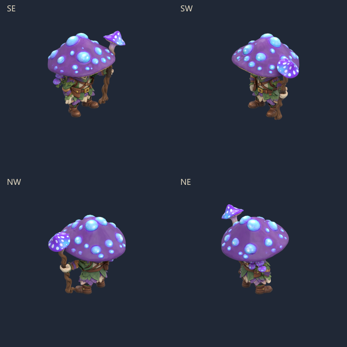
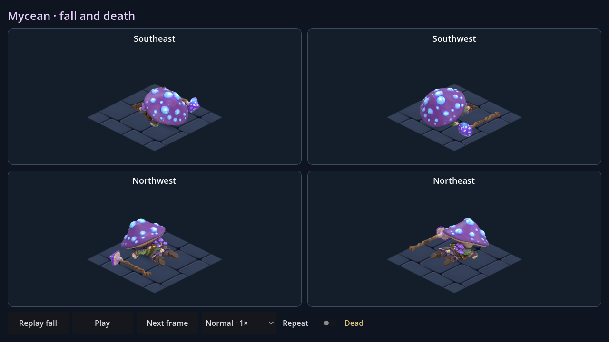
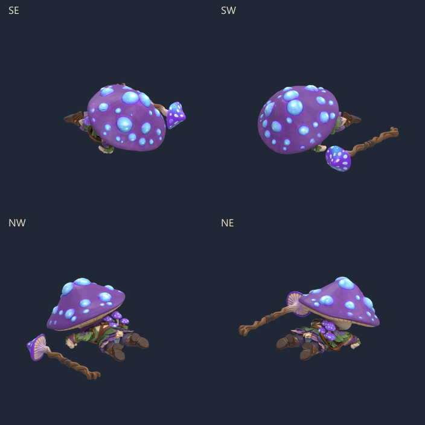
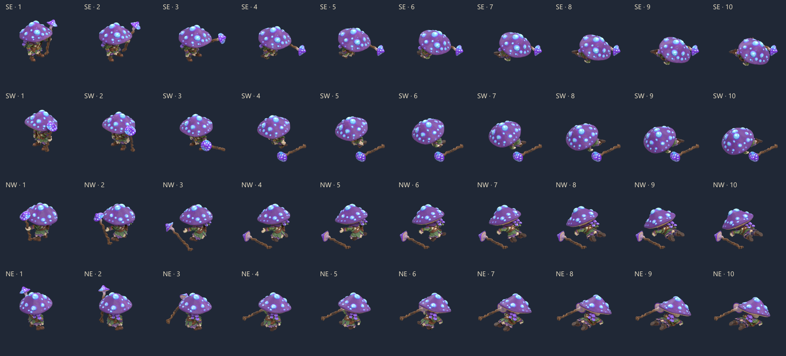

Les genoux cèdent, le bâton est lâché et le corps s'affaisse vers l'avant. Dix poses complètes, quatre vraies directions isométriques. La pose finale reste au sol.

Ouvrir MyceanDeath.tscn dans Godot puis F6 : Replay fall, pause, pas-à-pas, vitesses ×0,5 à ×2 et répétition facultative. Scène isolée, sans intégration aux raids.



Le grand chapeau masque le visage dans certaines directions. La tête s'oriente séparément du buste pour garder le corps près du sol. Les yeux sont peints dans le modèle : aucune fermeture des paupières n'est ajoutée.
Reproduction et validation · Source Blender avec les poses · Contrôle de la source sauvegardée